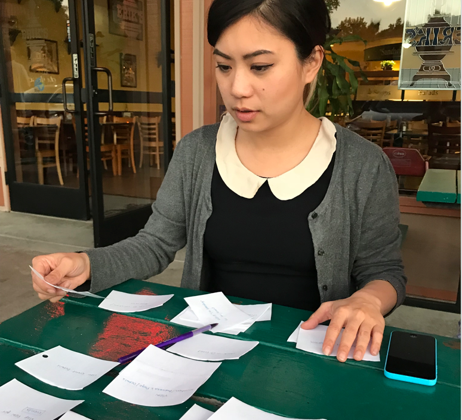

My Role
- Product Design
- UX Design
- Visual Design
- User Research

Deliverables
- User Surveys
- Persona Development
- Competitive Analysis
- Concept & Identity
- User Stories & Flow
- Wireframes
- Usability Testing
- Visual Design
- Digital Prototypes
Tools
- Sketch App
- Balsamiq
- Adobe Illustrator
- Invision + Marvel
- Flinto
- Google Suite
- Usability Hub
The Overview
What is HappyPaws?
"Can I bring my dog?" - If this question has ever crossed your mind - HappyPaws is for you! We spend the bulk of our day away from our pets. Why not optimize the time we do spend with them?
HappyPaws is designed to connect people with dog-friendly places and events. Connect with a community of dog-lovers and rediscover the dog-friendly world around you. Finally - A Fur-iendly Mobile App!
The Challenge
Inspired by experience
Inspired by my own search for reliable dog information, I was surprised to find the market lacked a multi-functional dog app. Existing applications on the market were either one-dimensional task or add-ons to existing platforms.
The challenge was to design an intuitive and meaningful experience driven by user research.
User research ensures we design for our target users. Helping them accomplish their goals and engages their motivations.
The Solution
Iterative Design for an Optimized Experience
HappyPaws was developed from concept to interactive mobile prototype over an 8-week timeline. Each stage of iterative design was driven by continuous user testing to deliver a truly user-centered experience.
Iterations of HappyPaws' mobile solution.
Introducing HappyPaws
HappyPaws is a multi-functional mobile app that helps dog owners rediscover the dog-friendly world around them. Users can search for dog-friendly places and locations, organize pet information, and connect to the large community of dog owners through social events and outdoor activities.
Below is the gallery for HappyPaws’ final iOS app :
ROBUST SEARCH CAPABILITIES
HappyPaws optimizes the user experience by providing multiple search capabilities. Users have the option to access information through a familiar search bar or an interactive visual search.
GUIDES & PET PROFILES
HappyPaws’ pet profiles help users organize a digital record of pet information and medical history. Users can share information with their Vet or dog sitter to improve pet care. Curated guides provide educational resources to keep your pet happy and healthy.
USER GENERATED CONTENT
HappyPaw’s community of users help contribute up-to-date information, reviews, and photos about pet-friendly establishments in their area.
CUSTOMIZED NEEDS
Users have their own profile tab to customize their experience: bookmark locations, track activity check-ins, RSVP to events, and post photos or reviews.
The Research
Understanding User Motivations
I studied behaviors and terminology used in dog forums, vet reviews, and competitor applications to help strengthen questions introduced in the user survey.
While familiar with some needs of dog ownership, surveying users validate questions and assumptions about owner-pet daily activities, relationship, obstacles and frustrations that prevented quality bonding time.
I was able to quickly gathering information from a large dataset and learn key motivations to build a genuine emotional connection for users.
Participatory research played a vital role in designing for functionality and emotions.
Discovering Impactful Key Features
In the survey of twenty-two dog owners, 78.9% participants indicated that their dog spent the majority of time indoors and rarely went to restaurants, events, or activities.
If I truly wanted to create an impactful change, the application needed to improve the quality time spent between owner and pet. I converted the top three goals prioritized by users into benchmarks for the project's Most Viable Product (MVP).
Robust search capabilities to find dog-friendly places and events
A centralized location to access and organize pet information
Ratings for dog-friendly establishments
The Strategy
Empathizing with Users
My research revealed dog ownership longevity and quantity of dogs played an influential role in user motivations and product requirements. I created three personas to embody these characteristics and aligned them with user goals discovered in the research phase. Personas played an essential component of the strategy process because it allowed me to empathize with user motivations and understand context for different application use cases.
Longtime Owner
Multiple Dogs
First Time Owner
Functionality & Feel
My vision for a multi-functional dog application was to create an emotional connection for users when rediscovering the dog-friendly world around them. Designing with both functionality and emotion in mind creates an engaging experience for the user.
These principles helped guide design decisions to create an intuitive journey :
Interconnected Ecosystem - At its core the app is a tool to help users optimize utility and improve convenience. The features needed to connect holistically to allow users to migrate seamlessly between functions.
Users Generated Content - Users contribute information to create a safe and interactive community. This ensures information is relevant and reliable.
Customized Content - Empowers users’ to take charge of their own journey and find activities that suit their needs.
Creating An Identity
I wanted the product's name to spark interest and motivate users to take action. I brainstormed a list of names and narrowed them down to Bark-Pals, HappyPaws, and Hello Spot!. I chose HappyPaws because its' verbal imagery of paws happily skipping aligns with the product's purpose to inspire owners to spend more quanlity time with their dog.
The Design
Laying the Foundation
HappyPaws differentiates itself from many single tasked competitor apps, but its multi-functioning capabilities also brings its own challenges. The platform needed to support coherent user flows that maintained user engagement. Using the personas to embed real scenarios, I methodically walked through tasks necessary to complete user goals.
I used both open and closed card sorting methods to clearly define informational hierarchy and categorize groupings. I discovered that the majority of respondents categorized tasks into 5 distinct groups : Places, Events, Pets, Owner, and Settings.

User conducting an Open Card Sort.
Sketches for Early Testing
I quickly sketched ideas for mobile screens using the tasks developed in the user flow, then converted them to low-fidelity wireframes in Balsamiq for early user testing. While testing is essential in the infancy stages of design to guarantee functionality; my edgarness to develop the visual design before completing the copyright content delayed the final prototype by a week due to adjustments in design.
Below are three mobile screens that display search results and business details. These screens will be used consistently throughout the case study to showcase the changes implemented through design iterations.
 Early mobile wireframes created on Balsamiq.
Early mobile wireframes created on Balsamiq.
Testing and Iterations
Testing initial wireframes face-to-face provided an effective method to identify adjustments. Usability testing prompted the introduction of additional icons to help users quickly scan information and a new tab bar for quick access to saved content. I developed the tab bar further by adding an ‘Explore’ option to inspire users to discover new content.
These adjustments were made on the high-fidelity wireframes developed in Sketch. In hindsight, iterations at this level became too time consuming when working at a 8-week project pace.
In hindsight, iterations at this level became too time consuming when working at a 8-week project pace.

High-Fidelity wireframes created on Sketch reflect improvements.
Creating the Vision
Understanding user motivations helped developed the tonial brand for HappyPaws. A simple and playful solution that brings convenience and discovery to dog owners. This vision is embedded into the visual design and function of the final product.
Final HappyPaws Logo.
Feedback & Adjustments
Incorporating user feedback, the mock ups refined ideas conveyed in the high-fidelity wireframes and improves on the visual execution. The rounded style introduced in the final logo is applied to elements in the application to establish a consistent pattern. A wider range of colors are also added to improve scan-ability and assist with informational hierarchy.

High-Fidelity mockups on Sketch.
Additional Improvements were made to Navigation and Visual Cues to improve the user experience.
The Development
Interactive Design
Before starting the interface design on Flinto, I considered existing mobile behaviors and device limitations. I chose to use common mobile patterns and transitions to reduce user learning time.
These interactions included :
Large Full Screen Swipe to change tab views
Press and release of a button or icon to activate/deactivate its features
Pinch/spread fingers on a map or photo to zoom in or out
Effective Prototypes
Interactive prototypes are highly beneficial because users can get an idea of how the product works and feels. I created prototypes on two different User Interface platforms: Marvel and Flinto.
Marvel's clickable prototype provided a hands on experience that would benefit product managers, clients, and user testing.
Flinto's platform was more suitable for designing micro user interface interactions. The attention to detail would ensure clear communication of designs for engineering handoff.

Note: Flinto's platform offers a clickable prototype as well, but requires users to download the Flinto Viewer App. This potentially creates barriers outside of a control environment.
UX Driven Improvements
Understanding how users navigate through the app helped ensure an intuitive design and revealed a disconnect between layout and interaction. To aid usability, I quickly reorganized content to establish consistent patterns and increase accessibility.
NAVIGATION IMPROVEMENTS
On this initial design, respondents pointed out that Hours displayed information, while the Call and Website buttons triggered an action.
The logic to group all Basic information together in the top fold was to reduce the number of clicks for users and optimize accessibility. While good in theory, the varying transition patterns did not convey a consistent pattern for user learning.
On the second iteration, I reintroduced the tab navigation from the main search page and grouped all categories that required transitions together. Reintroducing familiar elements help users anticipate element functions.
While fewer participants recognized the inconsistency, one user pointed out that Basic and Review introduced a slide transition while Call and Website opened a new module. This feedback helped me understand that grouping similar transitions patterns was also important.
The final iteration allows easy access to urgent functions and groups together similar elements for improved user learning. Photos and Reviews were moved to their own tab reducing the need for users to scroll past basic information to access content.

FILTER IMPROVEMENTS
I wanted to design a Filter function that allowed users to stay on the same screen providing transparency in the user flow. The initial Filter design encountered usability issues for right-hand dominant users because participants had to stretch outside of their natural thumb motion to press the small filter button. This issue had two potential solutions : (1) Increase the size of the button or (2) Move the location of the button.
I anticipated that increasing the button size would obstruct the map view, therefore the latter solution was applied. The Filter button was relocated to the bottom center of the map (center of the mobile screen) allowing users with either hand dominance to comfortably select the feature. Once Filter options were selected, items neatly collapsed into a reduced opacity button.

The Conclusion
Reflections
Designing and creating the HappyPaws' app from concept to prototype was a rewarding experience that not only improved my application of design concepts, but increased my appreciation for intuitive user-centered design.
At every stage of design, user feedback was essential - infusing empathy, prioritizing features, and ensuring an intuitive experience - to the overall success of the product.
Areas of growth
Branding and Abstract Design
I learned to use color, typography, and whitespace to convey an idea and designing more abstractly instead of using literal images to convey a message.
Consistency
KISS - Keep it Simple Silly. Reusing design elements (buttons, headers, interaction behaviors, etc) helped establish a consistent pattern for users to follow.
Documentation
Proactively tracking changes at every stage of the design helps when writing case studies and project handoffs.
Sketch with Detail
Taking the time to refine an idea or concept before moving it from paper to digital. This saves a lot of time in the long run and avoids potential redesigns
Overall Design
Design with intention, think about the purpose and function of each element. How do they all fit together to tell a story?
Ecosystem of pet solutions
This case study has only focused on developing the MVP features, but has the potential to expand into an entire digital pet-center ecosystem.
Digitize the veterinary experience :
- Collect data for vet appointments
- A companion desktop application for veterinary offices
Connect the community :
- Reunite lost dogs and their families
- Pet adoption platform for dog shelters
Thank you & Fur-well!
Woohoo! You made it to the end of this case study!
Hopefully you've enjoyed learning about HappyPaws.
Toby sure has!